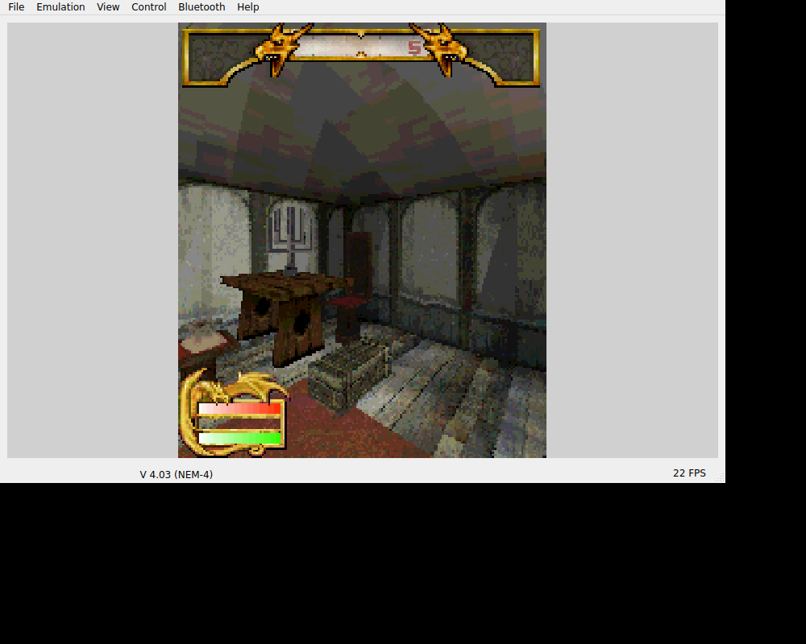

We brought Pocket Kingdom’s runtime and firmware foundation to Shadowkey. Its original character flow, starting room and saved-game route gave us a working world to keep intact while we worked on the controls.SK01SK02
A room to return to.

Shadowkey’s original starting room and HUD in the retained Linux EKA2L1 host window. The source also documents saving and reloading the room after a process restart.
Open the image for the full original view.
SK90The retained host route reaches character creation, the tutorial and the original 3D room. Save Game writes game00.sav; a complete process restart finds Game 1 and returns to that room and HUD.SK02
The archive also had missing sound references. They stayed missing. Host audio output was unavailable, so a missing walk filename could not honestly explain every silence or justify inventing replacement sounds.SK02
Who still owns the key?
Switching the keypad already released touch input separately, but opening the utility menu still called releaseAll. That cleared a physical hold. A transient dialog could then keep the matching physical key-up from reaching the game.SK03
We changed menu cleanup to release touches while keeping hardware ownership, and forwarded releases for keys already held. That let a new press navigate the utility menu without leaving an earlier press stranded in the game.SK03SK04
The keypad also kept native directions separate from digits. N-Gage’s hash scan code was not the Java ME hash character. Look, strafe, jump, use and the game’s two actions retained their own meanings.SK05SK06SK03
About these records
The saved-room and image evidence are historical Linux EKA2L1 execution. Later contact/menu tests establish their stated ownership behavior, not a new handset performance or sound result. Missing original sound references remain unfilled. The Ashen startup reference in the source is not the Buttered Sock movement patch.
The receipts
Selected source lines, investigation notes and recorded feedback. Open a receipt for the original context and scope.
SK01 / Pocket Kingdom supplied the runtime and firmware foundationCheckpoint investigation notes
Source: Shadowkey_Bridge_v0.1.2_PRIVATE_CHECKPOINT.zip / Shadowkey_Bridge_v0.1.2_PRIVATE/THIRD_PARTY_NOTICES.txt · selected lines 3–7
Original game code/assets: The Elder Scrolls Travels: Shadowkey, from the user-supplied RAR. All game files byte-identical; ownership remains with the original rights holders. EKA2L1 core: EKA2L1 contributors, GPL-3.0-or-later. Unmodified ARM64 native binary reused from the private Pocket Kingdom checkpoint. Corresponding upstream source snapshot, license and provenance are in upstream/. Native core SHA-256 is recorded there. Nokia N-Gage NEM-4 V4.03 firmware: reused from the same supplied-project checkpoint; firmware rights remain with their respective owners.
SK02 / Original character flow, saved room and missing sound referencesHistorical host observation notes
Source: Shadowkey_Bridge_v0.1.2_PRIVATE_CHECKPOINT.zip / Shadowkey_Bridge_v0.1.2_PRIVATE/evidence/HOST_TEST_NOTES.txt · selected lines 1–7, 11–14
Original game executed with the supplied data and recovered N-Gage firmware on the official EKA2L1 Linux continuous build master-6ac519122. This is separate from the unchanged ARM64 Android library recorded in upstream/PROVENANCE.json. Observed original execution: startup logos and intro, title/main menu, Create Character, class/race/gender selection, original character-name grid, Start Game, original tutorial, 3D starting room and HUD, forward/back movement and left/right turn, original pause menu, save slots and a game00.sav written by the original Save Game action. The host has no usable audio output. Audio quality, timing and effects were not verified. The supplied game attempts opens of NULL.wav and some walk sound filenames absent from the supplied archive; those references were left unchanged. No extra files or substitute sounds were fabricated. [... selected excerpt ...] No host test save or modified host configuration enters the APK runtime seed. Screenshots in this folder are host emulator evidence, not Android UI screenshots. PERSISTENCE: After a complete host emulator process restart, the original Load Game menu found Game 1, and loading it returned to the saved original 3D room/HUD. Screenshots host-load-slots.png and host-reloaded.png document this.
SK90 / Historical image / The Elder Scrolls Travels: ShadowkeyHistorical host capture
Source: Shadowkey_Bridge_v0.1.2_PRIVATE/evidence/host-first-gameplay.png
Retained historical host output. Original emulator chrome, where present, is part of the unchanged source image. No phone capture or phone performance is inferred.
Unchanged historical image. Source member: Shadowkey_Bridge_v0.1.2_PRIVATE/evidence/host-first-gameplay.png SHA-256: cc744b914dcc5e07f2efb98b167c1b471d21c64262359339833130d1f393abab Shadowkey’s original starting room and HUD in the retained Linux EKA2L1 host window. The source also documents saving and reloading the room after a process restart. Scope: Historical v0.1.0 Linux host original-game emulator window retained in .1.2; not new phone execution, not a synthetic renderer fixture.
SK03 / The menu cleared hardware and could lose its releaseCheckpoint investigation notes
Source: Shadowkey_Bridge_v0.1.2_PRIVATE_CHECKPOINT.zip / Shadowkey_Bridge_v0.1.2_PRIVATE/evidence/history/v0.1.1/UI_INTEGRATION_v0.1.1.txt · selected lines 14–36
PLATFORM MAPPINGS Digits 0-9 retain Symbian scan values 48-57. Star=42. Hash=127, not J2ME 35. MENU L=164, CLEAR=1, MENU R=165. Original movement and hardware mappings remain. All touch buttons use the shared BridgeInput reference counting. LOCAL KIT INTEGRATION FIX The supplied v1.0.1 setKeypadVisible() correctly releases only touch inputs, but its openMenu() still called releaseAll(), clearing held hardware before its mode selector could run. The embedded app/src copy instead releases only touch input on menu entry. Transient menu/help dialogs forward key-up events for already-held hardware to BridgeInput.physicalUp(), preventing a release from being lost while a dialog owns input focus. New menu-navigation key presses are not injected into the running game by these listeners. The exact integration diff is evidence/ui-kit-integration.patch. app/ui-kit/ retains the unchanged supplied reference kit and compiled JAR; app/src/com/wakka/bridgeui/ is the actual compiled source, including this fix. BOUNDARY Game/runtime seed, native core, signer, icon, game initialization, original hardware mapping and report implementation are retained. The report banner now identifies bridge v0.1.1. No game expansion or runtime change is included. Previous host game-execution evidence belongs to v0.1.0. The unchanged payload supports continuity; this pass does not claim a new physical Android test.
SK04 / Ashen startup reference and retained physical ownershipCheckpoint investigation notes
Source: Shadowkey_Bridge_v0.1.2_PRIVATE_CHECKPOINT.zip / Shadowkey_Bridge_v0.1.2_PRIVATE/UI_INTEGRATION_v0.1.2.txt · selected lines 3–6, 17–34, 41–42
The current kit's PROJECT_INSTRUCTIONS_REPLACEMENT.txt is retained unchanged in app/ui-kit/ and copied in full into AGENTS.md before game-specific guidance. The supplied Ashen v0.1.3 checkpoint was used as a private integration/startup test reference. Shadowkey retains its own controls and original runtime/data. [... selected excerpt ...] Keypad mode explicitly retains the complete separate original D-pad. It uses BridgeControls.makeKeypad(..., true), all original numeric/star/hash keys, MENU L/CLEAR/MENU R and large duplicate 5/7 action buttons. Whole groups reflow at narrower widths. Digits=48–57; star=42; hash=127; softkeys/clear=164/1/165. The shared permanent ORIGINAL KEYPAD / D-PAD RETURN switch sits outside both panels. Overflow contains only utilities/help. The preferred deck is 364dp; responsive minimum sizing governs actual measured space. Both modes reserve the same slot and do not recreate the renderer or restart/pause the worker. All touch inputs use shared owned sources. Mode changes release only touches; registered physical holds remain. The shared kit forwards key-up from utility and help dialogs. Existing Shadowkey hardware mapping is unchanged. UI kit v1.1.1 creates the window decor before requesting its insets controller, repairing the pre-setContentView cold construction crash. The Activity's existing fault handler now installs before FrameLayout/SurfaceView/UI construction. Game boot, input dispatch boundary, lifecycle, report writer and save extraction implementations are preserved. Only the report version banner changes. [... selected excerpt ...] Evidence from v0.1.1 is under evidence/history/v0.1.1/. Host original gameplay screens/logs/saves are v0.1.0 historical evidence, not new device verification.
SK05 / Original look, strafe, actions and separate directionsCheckpoint investigation notes
Source: Shadowkey_Bridge_v0.1.2_PRIVATE_CHECKPOINT.zip / Shadowkey_Bridge_v0.1.2_PRIVATE/README_FIRST.txt · selected lines 12–24, 44–48
CONTROLS Slide your thumb on the four-way digital D-pad to move forward/back and turn. 4/6: strafe. 2/8: look up/down. 1: jump. 3: use/pick up/interact. 5: right action (weapon/spell). 7: left action (consumable). */0: cycle action queues. #: character manager. 9: map. MENU L and MENU R: original pause/save menu. The original Options > Controls menu can customize game bindings. Tap the always-visible ORIGINAL KEYPAD button to change the inline controls; D-PAD RETURN restores the normal panel. Both modes retain the full original D-pad. Keypad mode has the original 15-key cluster and large 5/7 action aliases. Both modes share one measured slot, keeping the same live renderer attached. Switching releases touch holds while preserving physical-controller holds. Android Back closes gameplay. Save in the original game first. [... selected excerpt ...] Original 6R51.APP, UID 0x101FD3F6, runs through the unchanged EKA2L1 ARM64 core. All 1,935 original game files, NEM-4 firmware seed, native library and signer are preserved byte-for-byte. No recreated game logic or Ashen game assets. Existing C/E saves are never overwritten by first-install extraction. The APK has no INTERNET permission. This pass changes UI and early fault capture.
SK06 / The newer shell and old original-world evidence are separateCheckpoint investigation notes
Source: Shadowkey_Bridge_v0.1.2_PRIVATE_CHECKPOINT.zip / Shadowkey_Bridge_v0.1.2_PRIVATE/VERIFICATION.txt · selected lines 21–40
- Production MainActivity/resources tested with Android callbacks: 2 tests pass. Cold creation, safe insets, attach/draw, actual targets, one-tap mode buttons across five portrait/landscape spaces, stable renderer, no boot restart and teardown are checked. Injected SurfaceView construction failure confirms fault capture precedes UI/native startup and preserves a failed export locally. LIMITS Robolectric executes Android framework/UI code, with the JNI boundary shadowed and native boot deferred. It is not physical Android gameplay evidence. This pass has no new phone run. Control comfort, actual controller/device behavior, S25 Ultra safe areas, graphics/audio, live Downloads reporting, background/resume and original-game play/save/load still need device checking. The geometry cases describe available measured space after outer safe padding; root sizes below the usable minimum must not be claimed as supported. PRESERVED ORIGINAL-GAME EVIDENCE Host screenshots/logs/save are historical v0.1.0 evidence: original N-Gage game boot, character creation, native 3D scene and movement, pause/save, and reload after process restart through Linux EKA2L1. The payload is unchanged. This pass does not repeat or extend that historical gameplay verification.